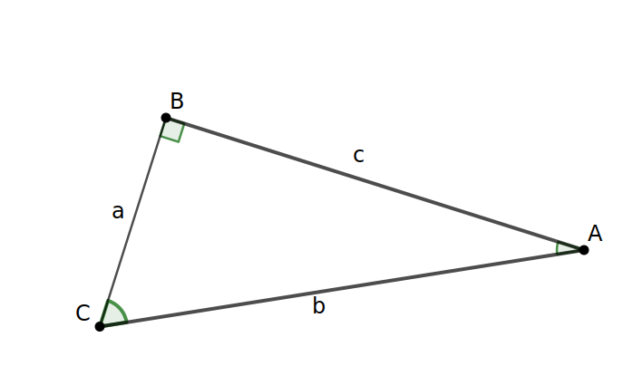
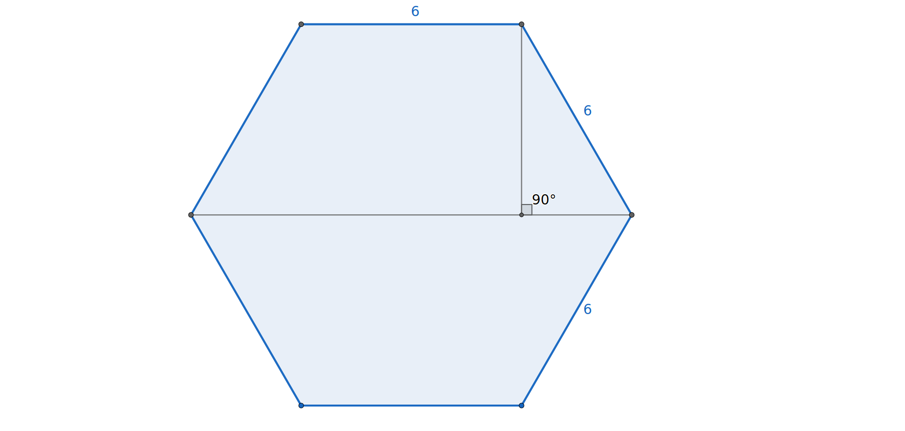

Section2.5Exploring Length and the Pythagorean Theorem
Dating from before 500 B.C., the Pythagorean Theorem allows us to compute lengths associated with right triangles. Upon completing this section, you should be able to explain to others how the Pythagorean Theorem follows from our basic principles. First, we introduce some terminology and refresh our memory on how to apply the theorem.
Subsection2.5.1Right Triangles
Definition2.5.1.
As noted in Definition 1.2.11, a right triangle is a triangle with one right angle. The longest side, called the hypotenuse, of a right triangle is always opposite the right angle. The other two sides of the right triangle are called the legs.
Reading QuestionsCheck Your Understanding
Refer to the picture as you answer the following:

1.
Which lowercase letter represents the hypotenuse in the triangle above?
Answer.
\(b=\overline{AC}\)
2.
Which angle appears to be the smallest in the triangle?
Answer.
\(\angle BAC\)
3.
Which side appears to be the shortest in the triangle?
Answer.
\(a=\overline{BC}\)
4.
How are the answers to the last two questions related? Does this relationship also hold for the largest side and largest angle?
Answer.
The smallest side is opposite the smallest angle. The largest side is opposite the largest angle.
Subsection2.5.2The Pythagorean Theorem
The Pythagorean Theorem states that if \(a\) and \(b\) are the lengths of the sides of a right triangle and \(c\) is the length of the hypotenuse, then \(a^2+b^2=c^2\text{.}\)
Theorem2.5.2.Pythagorean Theorem.
Suppose \(\Delta ABC\) is a right triangle with right angle at \(C\text{.}\) Let \(a\) and \(b\) be the lengths of legs \(\overline{BC}\) and \(\overline{AC}\text{,}\) respectively, and let \(c\) be the length of the hypotenuse \(\overline{AB}\text{.}\) Then \(a^2+b^2=c^2\text{.}\)
The next set of questions will refresh your skill in using the Pythagorean Theorem to determine missing lengths.
Reading QuestionsCheck your Understanding
1.
A triangle has legs of length 5 and 7. Determine the length of the hypotenuse.
Answer.
\(\sqrt{74}\approx8.602\)
2.
A square has a diagonal of length \(\sqrt{80}\text{.}\) Determine the length of the sides.
Hint.
Since the sides of a square are the same length, use the same letter to represent all of them. How do you create a triangle from a square?
Answer.
\(\sqrt{40}=2\sqrt{10}\approx 6.325\)
Subsection2.5.3Proving the Pythagorean Theorem with Picture Puzzles
The Pythagorean Theorem is very useful, but it is also somewhat mysterious. Why does the formula work for all right triangles? Surprisingly, there are more than 350 recognized proofs of the Pythagorean Theorem. We will look at just a few. In the following exploration, you will rearrange polygons built from a right triangle, and use the rearrangements to explain why \(a^2+b^2=c^2\) in each case. You are encouraged to try all the proofs in this section and to choose one to learn well enough to convince others.
Exploration2.5.1.Puzzling over Why the Pythagorean Theorem Holds.
For these explorations, we start with an arbitrary right triangle with hypotenuse length \(c\) and legs of length \(a\) and \(b\text{.}\)
(a)First Pythagorean Puzzle.
In Figure 2.5.3, the four blue triangles on the right are congruent copies of the right triangle \(\Delta ABC\text{.}\) Check Puzzle_1 to reveal a second square. The side length of this new orange square is \(c\text{.}\) To verify this, you can line up the side of the square with the hypotenuse of one of the triangles.
Figure2.5.3.An interactive GeoGebra applet for Task 2.5.1.a.
Fill the square on the left using the four blue copies of the triangle and the orange square on the right. Pieces can be moved by selecting the interior and they can be rotated by moving the dotted vertex. The red triangle labeled \(\Delta ABC\) is only shown for reference and will not be used. As always, there should be no gaps or overlaps. Preserve your work with a sketch or screenshot.
What is the length of a side of the square that you filled? Give your answer in terms of lengths \(a\text{,}\)\(b\text{,}\) and/or \(c\text{.}\)
Determine the area of each of the pieces used to fill the square frame using the variables \(a\text{,}\)\(b\text{,}\) and/or \(c\text{.}\) Write the sum of these areas in terms of these variables.
(b)Second Pythagorean Puzzle.
For this puzzle, select Puzzle_2 in Figure 2.5.4. The orange square should no longer be visible. Instead, a green square with side length \(a\text{,}\) corresponding to the shorter leg of \(\Delta ABC\text{.}\) The purple square below it has a side length \(b\) corresponding to the other leg.
Figure2.5.4.An interactive GeoGebra applet for Task 2.5.1.b.
Fill the square frame on the lower left with the four congruent right triangles and the squares with lengths \(a\) and \(b\text{,}\) respectively. Preserve your work with a sketch or screenshot.
What is the length of a side of the square that you filled? Give your answer in terms of lengths \(a\text{,}\)\(b\text{,}\) and/or \(c\text{.}\)
Determine the area of each of the pieces used to fill the square frame using the variables \(a\text{,}\)\(b\text{,}\) and/or \(c\text{.}\) Write the sum of these areas using variables.
(c)Using the First Two Puzzles Together to Prove the Pythagorean Theorem.
Look at the two ways in which you filled the square frames and the expressions for the area of the frames. How can you use this to justify the formula \(a^2+b^2=c^2\text{?}\)
Hint.
We could change the size and shape of the right triangle by moving any of the vertices \(A\text{,}\)\(B\text{,}\) or \(C\) in the red triangle. Note that the sizes of the squares will also change according to the new lengths of the sides of the triangle. Will the length of each side of the black square frames still be expressed with the algebraic formula you indicated above? Can the new pieces be moved so that the new frame can be filled using the Puzzle 1 pieces and separately using the Puzzle 2 pieces? Give an algebraic argument for why the frame for Puzzle 1 and Puzzle 2 must be the same for any specified right triangle. Why does this allow us to set the two sums of areas equal to each other?
(d)A Presidential Proof.
This proof of the Pythagorean Theorem is attributed to James A. Garfield, the twentieth President of the United States. Refer to the diagram below:
The diagram above consists of two congruent right triangles and one isosceles right triangle arranged to form a trapezoid. Label the hypotenuses with the letter \(c\text{.}\) Label the smallest side of these triangles \(a\) and the other leg \(b\text{.}\) Note that the hypotenuse of the remaining right triangle is longer than \(c\text{.}\) Instead, call its length \(d\) to distinguish between the two numbers.
Identify the two parallel bases for the trapezoid. Determine the height of this trapezoid in terms of the labels you put on the diagram.
Compute the area of the trapezoid using the trapezoid formula leaving your answer in terms of the variables you used to label the diagram.
Similarly, compute the areas of each of the three triangular pieces and add them together.
How does this prove the Pythagorean Theorem?
(e)
The final proof of the Pythagorean Theorem is primarily visual. Almost no algebra is required. The GeoGebra interactive in Figure 2.5.5 provides four copies of a right triangle and a smaller square of unlabeled side length that can be moved and rotated.
Figure2.5.5.An interactive GeoGebra applet for proving the Pythagorean Theorem.
Rearrange the four congruent triangle copies and the small square to form a square. Verify that your shape is definitely a square. Do not use \(\Delta ABC\text{.}\) Drag the centers of shapes to move them and use the labeled corners to rotate. Save a copy of your work.
What is the length of a side of this square?
What is the area of the square you created?
What is the length of a side of the small square in terms of the labels \(a\text{,}\)\(b\text{,}\) and/or \(c\text{?}\)
Once again, our goal is to show \(a^2+b^2=c^2\text{.}\) Use the same five pieces to create a pair of touching squares of area \(a^2\) and \(b^2\text{.}\) Some puzzle pieces will cover parts of both squares. A second copy of the GeoGebra applet is provided below for your use.
Figure2.5.6.An interactive GeoGebra applet for proving the Pythagorean Theorem, repeated from above.
How do you know that the two squares in your diagram are actually squares and that their side lengths are \(a\) and \(b\text{,}\) respectively? Base your argument on the lengths of the triangle sides.
How do these two sketches together show that the Pythagorean Theorem holds?
Subsection2.5.4Reflecting on the Pythagorean Theorem
Most people can state the Pythagorean Theorem and use it to find missing lengths in a right triangle, but in this section you have learned why the theorem holds for all right triangles. We have practiced using variables in our arguments so that our explanation is not just shown for a right triangle with lengths 3, 4, and 5 (or 5, 12, and 13), but for all right triangles. Even so, the fact that we used puzzle pieces enables us to share this knowledge with anyone who has at least a fourth grade knowledge of geometry, area, and square numbers. A few of our proofs did not require the algebraic representation and symbolic manipulation learned in middle or high school.
On the other hand, we need to be careful that we do not try to apply this theorem to non-right triangles. It is possible to create a triangle whose side lengths are 3, 5, and 6, but this triangle will not have a right angle. In fact, the converse of the Pythagorean Theorem states that if \(a\text{,}\)\(b\text{,}\) and \(c\) are sides of a triangle with \(a^2+b^2=c^2\text{,}\) then the triangle will have a right angle opposite the side with length \(c\text{.}\)
Exercises2.5.5Exercises
Building Our Toolbox
1.Pythagorean Theorem.
Write down the formula for the Pythagorean Theorem. Use an example and sketch as you explain when the theorem can be used, what the variables represent, and how to use the formula to solve a problem.
2.Principle of Additivity of Length.
Use a picture to demonstrate why a segment formed by extending a segment of length \(a\) units by a segment of \(b\) more units produces a segment of length \(a+b\) units.
What happens when segments \(\overline{AB}\) of length 3 inches, \(\overline{BC}\) of length 5 inches, and \(\overline{AC}\) of length 6 inches are joined at the endpoints, \(A\text{,}\)\(B\text{,}\) and \(C\text{?}\) Is this still a straight line?
Again let \(\overline{AB}\) have length 3 inches and \(\overline{BC}\) have length 5 inches. Can you create segment \(\overline{AC}\) with length 10 inches? Explain.
The measure of \(\angle{BCA}\) is given by the value of slider \(\alpha\text{.}\) With this slider set to 90 degrees, move the other two sliders to change the lengths of \(a=BC\) and \(b=AC\text{.}\) The length of \(c=AB\) should also change.
What do you notice about \(a^2+b^2\) and \(c^2\text{?}\)
(b)
Now change the value of \(\alpha\) so that \(0\lt \alpha \lt 90\text{.}\) What do you notice about \(a^2+b^2\) and \(c^2\text{?}\) Is your observation also true when you change \(a\) and \(b\text{?}\) Does your observation remain true when you change \(\alpha\) to another acute angle?
(c)
Now slide \(\alpha\) so that it has a value between 90 degrees and 180 degrees. How do \(a^2+b^2\) and \(c^2\) compare now? Experiment with different obtuse angles and lengths to see whether your conjecture remains true.
5.Generating Pythagorean Triples with Algebra.
A Pythagorean triple is a set of three positive integers \(a\text{,}\)\(b\text{,}\) and \(c\) such that \(a^2+b^2=c^2\text{.}\)
Find \(c\) that forms a Pythagorean triple with the numbers \(a=45\) and \(b=200\text{.}\) Show your work.
Find the number \(a\) that forms a Pythagorean triple with the numbers \(b=32\) and \(c=130\text{.}\) Show your work.
Demonstrate by an example that it is not always possible to create a Pythagorean triple from two given integers. In other words, name two integers, \(a\) and \(b\text{,}\) such that \(a^2+b^2\) is not equal to a perfect square.
Choose two positive integers. Call the smaller one \(j\) and the larger one \(k\text{.}\)
Compute \(2jk\) and call it \(a\text{.}\)
Compute \(k-j\) and call it \(b\text{.}\)
Is there a third positive integer \(c\) such that \(a\text{,}\)\(b\text{,}\) and \(c\) form a Pythagorean triple? If so, what is \(c\text{?}\)
Use algebra to demonstrate that the sum of \((2jk)^2\) and \((k-j)^2\) is always a perfect square when \(j\) and \(k\) are positive integers with \(j\lt k\text{.}\) What does this tell you about Pythagorean triples?
6.Area of a Regular Hexagon.
A regular hexagon with side length 6 units is pictured in Figure 2.5.9. Determine the following:
The height of the hexagon.
The area of the hexagon.

Figure2.5.9.A regular hexagon with side length 6 units.
Writing Prompts
7.
Write a letter to a friend using one of the puzzle proofs in this section to explain why the Pythagorean Theorem holds. Principle 2.0.3 or Principle 1.1.3 should play an implicit or explicit role in your explanation.